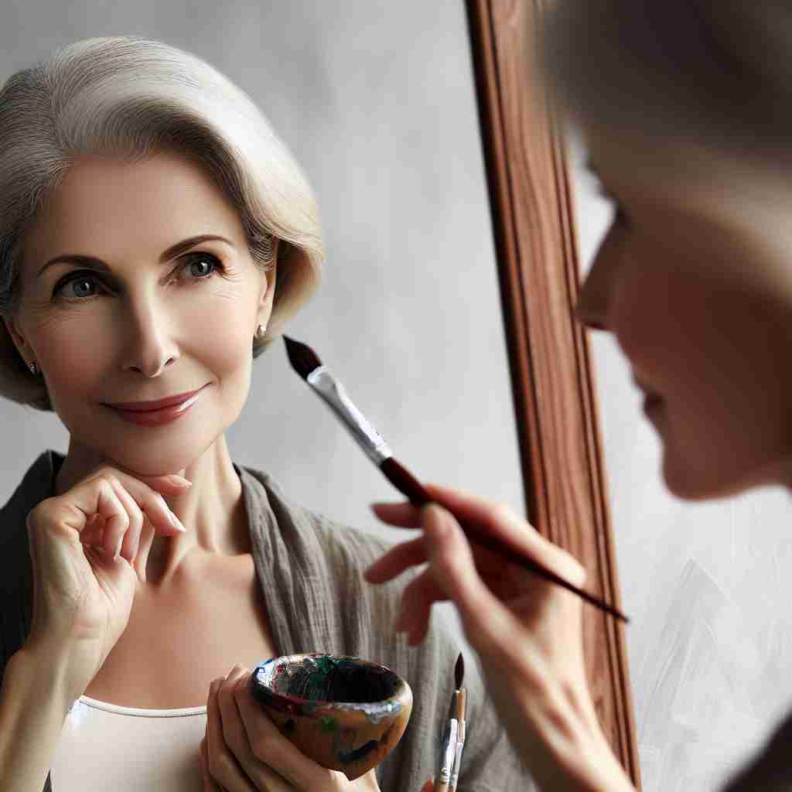

💬 She made the dress herself in her cozy sewing room. 她在自己舒适的缝纫室里亲手制作了那件裙子。

💬 The queen is cutting the ribbon by herself at the grand opening. 女王亲自参加盛大开幕仪式剪彩。
💬 The woman is looking at herself in the mirror. 那个女人正在镜子里看着自己。

💬 She loves to express herself when putting on makeup. 她喜欢在化妆时表达自己。
🧠 'Herself'的核心含义是指代先前提到的女性。通过强调"自己"这个概念，衍生出表示独立行动、正常状态和真实个性的用法。记忆时，可以想象一个女性在不同情境下展现"自己"的场景，如独立完成任务、恢复健康状态或展现真实性格。这种自我指代的概念贯穿了'herself'的各种用法。
🔈 [hɜː'self]
🗝️ pron. used as the object of a verb or preposition to refer to a female person or animal that has already been mentioned 用作动词或介词的宾语，以指代已提到的女性人或动物。
🎭 在一个宠物店里，一位女士正在和店员谈话。她指着窗外的狗，说：“那只狗一直在看着自己在镜子中的影像，就像是想跟自己玩耍一样。”这里，‘herself’ 指的是狗已经被提到的情况下，作为动词或介词的宾语。
💬 She hurt herself while cooking. 她在做饭时受伤了。
🌳 由代词 'her'（她的）和反身代词后缀 '-self' 组成，表示 '她自己'，用于强调动作由她自己完成或她自身的角色。
🕸️ 1. himself: 他自己 2. myself: 我自己 3. themselves: 他们自己
💡 记忆 'herself' 时，可以联想为 'her + self' 的组合，即 '她' 加上 '自我'，用于强调一个女性个体自己参与或完成的动作。通过这种联想，更容易记住 'herself' 的用法。